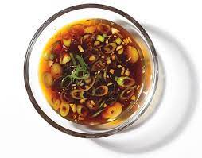

Spicy Lime Marinade

Description
This is the most tasty marniade recipe of all the marinade recipes
found on the internet. It doesn't matter if you use a poor person's plain ingredints
or the most fancy ingredients you can find-- this marinade will
be the best.
You'd better believee it.
Ingredients
- lime, a pair
- Serranos, a handful
- liquids
Steps
- Put in your limes' juice and zest, any amount will do
- Put in your serranos, just enough to cover the lime, no jostling the bowl
- Add liquids.
- Stir until gloopy; add liquids if still dry.